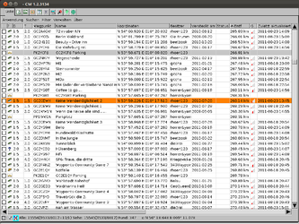
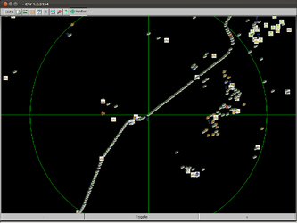

CacheWolf
Ausbaufähige Anleitung
Dieser Anleitung fehlen noch einige Informationen. Wenn Du etwas verbessern kannst, dann editiere den Beitrag, um die Qualität des Wikis noch weiter zu verbessern.
Anmerkung: Installation nach /opt und Skripte sind noch nicht ausgereift.
Dieser Artikel wurde für die folgenden Ubuntu-Versionen getestet:
Ubuntu 16.04 Xenial Xerus
Ubuntu 14.04 Trusty Tahr
Zum Verständnis dieses Artikels sind folgende Seiten hilfreich:
CacheWolf  ist ein Hilfsprogramm für das sog. Geocaching. Es ermöglicht komfortabel das Verwalten von Caches der Seiten geocaching.com
ist ein Hilfsprogramm für das sog. Geocaching. Es ermöglicht komfortabel das Verwalten von Caches der Seiten geocaching.com  und opencaching.de . Um das Programm zu nutzen, ist es notwendig, auf mindestens einer dieser Seiten ein Benutzerkonto zu haben.
und opencaching.de . Um das Programm zu nutzen, ist es notwendig, auf mindestens einer dieser Seiten ein Benutzerkonto zu haben.
CacheWolf verfügt u.a. über folgende Merkmale:
Import von GPX Dateien
Download von Karten
Konfigurierbare und sortierbare Listenansicht
Radaranzeige
Verschiedene Filter
Eine vollständige Liste der Funktionen findet sich auf der Homepage.
|  |
| Liste |
|  |
| Radar |
Voraussetzungen¶
Das Programm basiert auf Java. Die Installation einer Laufzeit-Umgebung (JRE) in der Version 6 oder höher ist daher zwingend Voraussetzung zur Nutzung des Programms.
Möchte man komfortabel mit dem Programm arbeiten und auch Daten mit einem GPS-Gerät austauschen, so ist die Installation von GPSBabel notwendig.
gpsbabel (universe, siehe GPSBabel)
 mit apturl
mit apturl
Paketliste zum Kopieren:
sudo apt-get install gpsbabel
sudo aptitude install gpsbabel
Installation¶
CacheWolf ist nicht in den Paketquellen vorhanden. Man muss das Programm daher manuell installieren.
Das jeweils aktuelle Release kann von cachewolf.aldos.de/nb/  als Archivdatei heruntergeladen werden. Der Dateiname lautet CacheWolf-Java.zip. Im Downloadverzeichnis immer die Version mit der höchsten rNummer wählen.
als Archivdatei heruntergeladen werden. Der Dateiname lautet CacheWolf-Java.zip. Im Downloadverzeichnis immer die Version mit der höchsten rNummer wählen.
Hinweis!
Zusätzliche Fremdquellen können das System gefährden.
Manuelle Installation ins Homeverzeichnis¶
Die heruntergeladene Datei CacheWolf-Java.zip vom Downloadverzeichnis ins Homeverzeichnis verschieben und dort entpacken [2] (Rechtsklick "Hier entpacken" wählen). Nun wechselt man in das Verzeichnis CacheWolf-Java und macht dort das Skript CacheWolf.sh ausführbar [6].
chmod +x ./CacheWolf-Java/CacheWolf.sh
Jetzt kann das Programm mit
./CacheWolf-Java/CacheWolf.sh
gestartet werden.
Manuelle Installation nach /opt¶
Hinweis:
Die Installation nach /opt auf Mehrbenutzersystemen ist derzeit nicht optimal. Das Programm legt im Installationsverzeichnis Daten ab. Insbesondere im Mehrbenutzer-Betrieb kann es je nach Nutzung zu Rechteproblemen kommen. Die Übertragung zum GPS hängt, falls die Daten des Vornutzers nicht überschrieben werden können.
Eine Installation nach /opt [3] hat den Vorteil, dass Programm und Daten sauber getrennt sind und auch mehrere User das Programm nutzen können. CacheWolf erfährt sehr häufig Updates, daher wird die manuelle Installation - auch wenn sie sehr einfach ist - schnell lästig, weil man selbst auf die Programm/Datentrennung achten muss.
Programmverzeichnis anlegen¶
folgende Befehle sind als root bzw. mit vorangestelltem sudo ausführen. Die Datei CacheWolf-Java.zip sollte sich dazu bereits im Downloadverzeichnis befinden.
unzip -o -d /opt/CacheWolf-Java ./CacheWolf-Java.zip # CacheWolf ins Verzeichnis /opt/CacheWolf-Java entpacken ln -s /tmp/CacheWolf.log /opt/CacheWolf-Java/log.txt # Logdatei per Symlink nach /tmp verlegen chmod 666 /opt/CacheWolf-Java/log.txt # Logdatei beschreibbar machen ln -s /tmp/CacheWolf.loc /opt/CacheWolf-Java/temp.loc # Loc-Datei per Symlink nach /tmp verlegen (wird erst verwendet bei Datenaustausch zum GPS) chmod 666 /opt/CacheWolf-Java/temp.loc # Loc-Datei beschreibbar machen
Startskript /usr/local/bin/cachewolf anlegen¶
Mit root-Rechten legt man die Datei /usr/local/bin/cachewolf mit folgenden Inhalt an:
1 2 3 4 | #!/bin/sh cd /opt/CacheWolf-Java java -Xms512M -Xmx1024M -cp CacheWolf.jar ewe.applet.Applet CacheWolf.CacheWolf -c ~/.CacheWolf/pref.xml & |
Minimale Einstellungsdatei ~/.CacheWolf/pref.xml erstellen¶
nun erzeugt man noch die Einstellungsdatei unter ~/.CacheWolf/pref.xml mit diesem Inhalt:
1 2 3 4 | <?xml version="1.0" encoding="UTF-8"?> <preferences> <basedir dir="/home/$USERNAME/.CacheWolf/Profile/" /> </preferences> |
Automatisierte Installation nach /opt per Skript¶
Das folgende Skript fast die oben aufgeführten Schritte der Installation nach /opt zusammen. Es kann nach jedem CacheWolf-Update erneut angewendet werden.
1 2 3 4 5 6 7 8 9 10 11 12 13 14 15 16 17 18 19 20 21 22 23 24 25 26 27 28 29 30 31 32 33 34 35 36 37 38 39 40 41 42 43 44 45 46 47 48 49 50 51 52 53 54 55 56 57 58 59 60 61 62 63 64 65 66 67 68 69 70 71 72 73 74 75 76 77 78 79 80 81 82 83 84 85 86 87 88 89 90 91 92 93 94 95 96 97 | #!/bin/sh # # CacheWolf nach /opt/CacheWolf-Java installieren. # TMPDIR=/tmp/CacheWolf-Java # Temp-Verzeichnis ZIPDIR=~/Downloads # Downloadverzeichnis PRGDIR=/opt/CacheWolf-Java # Programmverzeichnis DATADIR=.CacheWolf # Datenverzeichnis ZIPNAME=CacheWolf-Java.zip # Name der heruntergeladenen Datei STARTSKRIPT=cachewolf # # Auspacken und Anlegen der nötigen Symlinks nach /tmp # unzip -o -d $TMPDIR $ZIPDIR/$ZIPNAME # CacheWolf nach /tmp entpacken echo > /tmp/CacheWolf.log # Dummydateien für Symlinks erzeugen echo > /tmp/CacheWolf.loc # ln -sf /tmp/CacheWolf.log $TMPDIR/log.txt # Logdatei per Symlink nach /tmp verlegen chmod 666 $TMPDIR/log.txt # Logdatei beschreibbar machen ln -sf /tmp/CacheWolf.loc $TMPDIR/temp.loc # Loc-Datei per Symlink nach /tmp verlegen # (wird erst verwendet bei Datenaustausch zum GPS) chmod 666 $TMPDIR/temp.loc # Loc-Datei beschreibbar machen # # Datenverzeichnis # mkdir -p ~/$DATADIR/Profile/default # Datenverzeichnis anlegen # # Minimale Einstellungsdatei ~/.CacheWolf/pref.xml anlegen falls noch nicht vorhanden # test -e ~/$DATADIR/pref.xml if [ "$?" = "0" ] then echo echo Hinweis: ~/$DATADIR/pref.xml bereits vorhanden echo else ( cat <<EOP <?xml version="1.0" encoding="UTF-8"?> <preferences> <basedir dir="/home/$USERNAME/$DATADIR/Profile/" /> <lastprofile autoreload="true">default</ lastprofile> </preferences> EOP ) > ~/$DATADIR/pref.xml fi ; # # einfaches Startskript cachewolf erzeugen # # Das Startskript entspricht dem Original CachWolf.sh mit folgenden Änderungen: # $PRGDIR # festgelegtes Programmverzeichnis # -c ~/.CacheWolf/pref.xml # CacheWolf eine Einstellungsdatei fest vorgegeben ( cat <<EOM #!/bin/sh cd $PRGDIR java -Xms512M -Xmx1024M -cp CacheWolf.jar ewe.applet.Applet CacheWolf.CacheWolf -c ~/.CacheWolf/pref.xml & EOM ) > /tmp/$STARTSKRIPT chmod 755 /tmp/$STARTSKRIPT # Startskript ausführbar machen # # Programm nach /opt und Startskript nach /usr/local/bin/ verschieben. # echo echo =================================================================== echo ' Das Programmverzeichnis wird nun nach /opt und das Startskript,' echo ' sofern nicht vorhanden, nach /usr/lokal/bin verschoben. Dazu sind' echo ' Adminrechte erforderlich:' echo =================================================================== sudo cp -a --no-preserve=owner $TMPDIR $PRGDIR test -e /usr/local/bin/$STARTSKRIPT if [ "$?" = "0" ] then echo echo Hinweis: /usr/local/bin/$STARTSKRIPT bereits vorhanden echo else sudo cp -a --no-preserve=owner /tmp/$STARTSKRIPT /usr/local/bin/ fi ; # Aufräumen? # rm -R /tmp/CacheWolf-Java # rm /tmp/$STARTSKRIPT |
Das Skript entpackt die die Datei CacheWolf-Java.zip nach /opt/CacheWolf-Java, erzeugt ein Datenverzeichnis ~/.CacheWolf im Homeverzeichnis mit einer minimalen Einstellungsdatei prefs.xml und legt ein Startskript cachewolf in /usr/local/bin/ an.
Bedienung¶
./cachewolf.sh
| Startparameter | |
| Verfügbare Optionen | Bedeutung |
-c preferences.xml | lädt die angegebene Einstellungsdatei, z.B. -c ~/pref.xml |
Verbesserte Anmeldung von CacheWolf an geocache.com¶
Hinweis:
Seit einem Update auf geocaching.com kann sich CacheWolf nicht mehr automatisch per hinterlegten Passwort an der Seite anmelden. geocaching.com setzt zusätzlich im Browser ein Cookie mit einer UserID. Diese muss CacheWolf z.Zt manuell mitgeteilt werden, was sehr umständlich ist. Eine gangbare Lösung wäre das Cookie auszulesen und die UserID in die prefs.xml noch vor dem Start einzutragen.
Das folgende Beispiel funktioniert nur mit dem Browser Firefox und installiertem Export Cookies Add-on. Das Skript legt ein Startskript an, das aus der Datei ~/cookies.txt (zuvor mit Firefox abgespeichert) die UserID ausließt und in die ~/.CacheWolf/pref.xml schreibt. Das Cookie bzw. die UserID ist gültig, solange man sich nicht von der geocaching.com Seite abmeldet.
1 2 3 4 5 6 7 8 9 10 11 12 13 14 15 16 17 18 19 20 21 22 23 24 25 26 27 28 29 30 31 32 33 34 35 36 37 38 39 | #!/bin/sh # # Anlegen eines Startskripts cachewolf in /usr/local/bin/ # # das Skript liest den Cookie von geocaching.com aus der zuvor abgespeicherten Datei ~/cookie.txt. # # Dazu muss im Firefox das Addon "Export Cookies 1.2" installiert sein. # Nachdem man sich auf der Seite geocaching.com angemeldet hat exportiert man das Cookie über # Extras / Export Cookies und speichert es in der Datei ~/cookie.txt. # # Beim Start des Skripts wird die aktuelle (geocaching.com) userid ausgelesen und in die Konfigurationsdatei # pref.xml eingefügt. # # Der Cachewolf-Autor empfiehlt derzeit copy&paste was aber sehr umständlich ist. # Ziel des Skript soll es sein diesen Schritt (halbwegs) zu automatisieren. # ( cat <<EOM #!/bin/sh CACHEWOLF_DATA=~/$CWDATA CACHEWOLF_PRG=$PRGDIR test -e ~/cookie.txt if [ "$?" = "0" ] then USERID_TXT=\$(grep "geocaching.com" ~/cookies.txt | grep "\sgspkuserid" | cut -f 7 | cut -c -36) # USERID aus cookie.txt auslesen USERID_XML=\$(grep "UserID=" \$CACHEWOLF_DATA/pref.xml | cut -d ' ' -f 16) # USERID aus pref.xml auslesen echo USERID_TXT=$USERID_TXT echo USERID_XML=$USERID_XML sed s/\$USERID_XML/UserID=\"\$USERID_TXT\"/ \$CACHEWOLF_DATA/pref.xml > \$CACHEWOLF_DATA/pref.tmp # USERID_XML durch USERID_TXT ersetzen und in Kopie der pref.xml speichern cp \$CACHEWOLF_DATA/pref.tmp \$CACHEWOLF_DATA/pref.xml # alte pref.xml durch neue mit aktueller USERID ersetzen fi ; cd \$CACHEWOLF_PRG java -Xms512M -Xmx1024M -cp CacheWolf.jar ewe.applet.Applet CacheWolf.CacheWolf -c \$CACHEWOLF_DATA/pref.xml & EOM ) > ~/cachewolf.sh |
Problembehandlung¶
Benutzt man das Original-Startskript im CacheWolf Verzeichnis wird das Programm mit
1 | java -Xms64M -Xmx1024M -cp CacheWolf.jar ewe.applet.Applet CacheWolf.CacheWolf &
|
gestartet. Hier kann es nach einige Zeit vorkommen, dass das Programm sehr träge wird und kaum noch zu bedienen ist. In so einem Fall hilft es den ersten Parameter -Xms auf 512M zu erhöhen (siehe Diskussion hier).
1 | java -Xms512M -Xmx1024M -cp CacheWolf.jar ewe.applet.Applet CacheWolf.CacheWolf &
|
In den Skript-Beispielen dieses Artikels wurde der Wert bereits angepasst.
- Erstellt mit Inyoka
-
 2004 – 2017 ubuntuusers.de • Einige Rechte vorbehalten
2004 – 2017 ubuntuusers.de • Einige Rechte vorbehalten
Lizenz • Kontakt • Datenschutz • Impressum • Serverstatus -
Serverhousing gespendet von